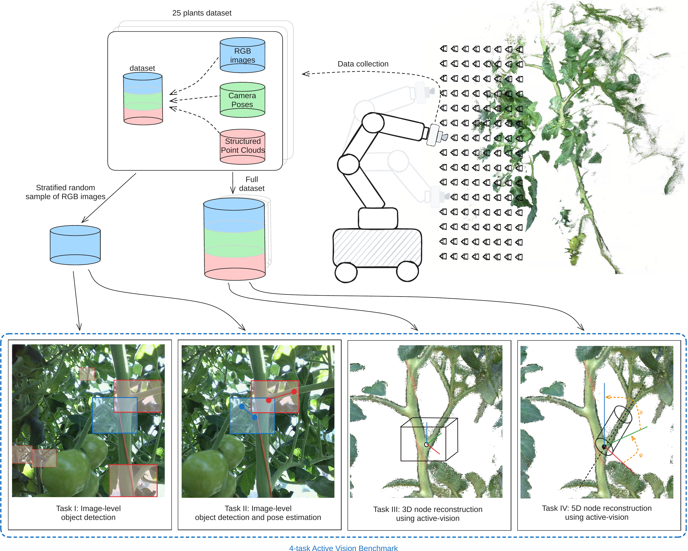
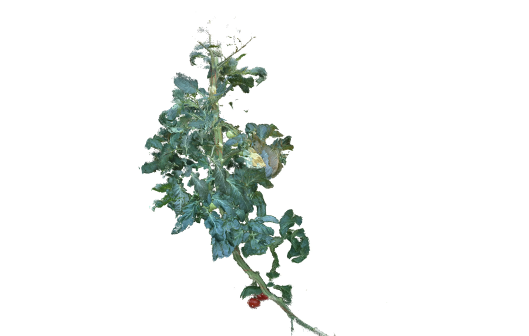
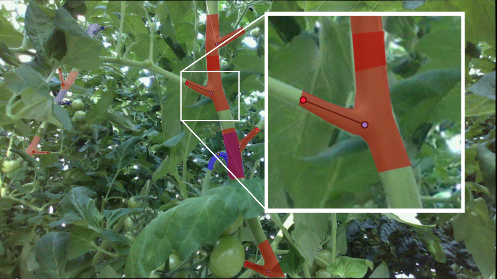
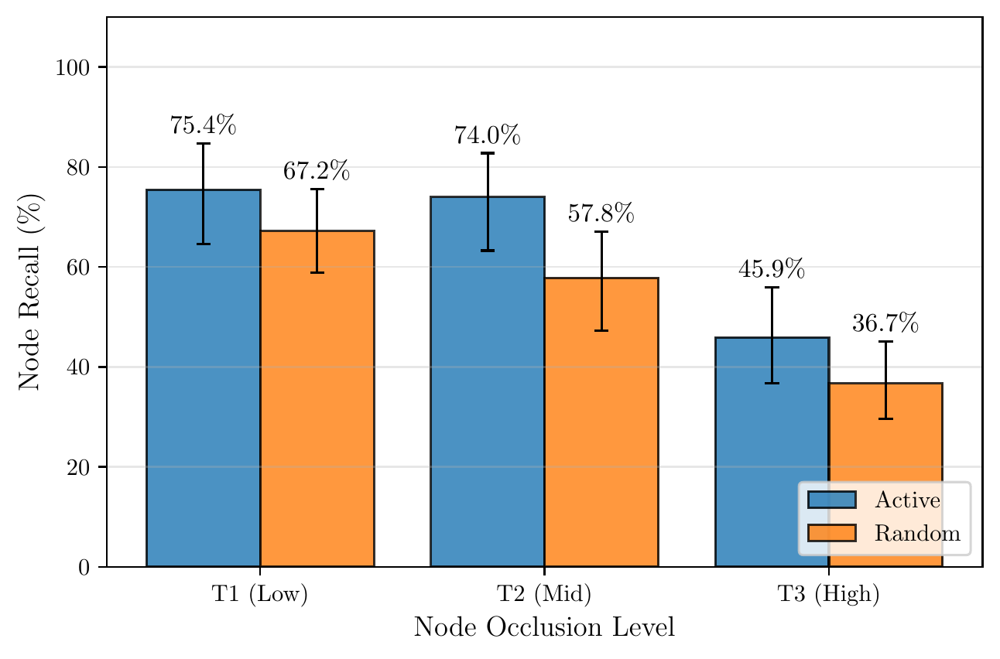

A real-world benchmark, dataset, and evaluation suite for active viewpoint planning under severe occlusion.
Active vision is the process of moving a camera to resolve occlusions and gather more informative views, which is important for robots operating in cluttered greenhouses. WUR-AV-Bench provides a densely sampled real-world dataset and a four-task evaluation protocol for developing and comparing active viewpoint-planning methods, without needing a physical robot.

We present WUR-AV-Bench, a benchmark consisting of a dataset and evaluation tools for developing, evaluating, and comparing active viewpoint planning methods in complex greenhouse environments with tomato plants subject to severe occlusions. The dataset comprises densely sampled viewpoints containing RGB-D images, 3D point clouds, and camera poses, together with object-pose annotations and per-object occlusion and complexity scores. The benchmark defines four progressively more challenging tasks, requiring methods to detect leaf and tomato truss nodes in single images, estimate their 2D orientation, and actively select informative viewpoints for 3D localization and 5D pose estimation under severe occlusion. These tasks enable systematic analysis of perception accuracy, viewpoint planning efficiency, and robustness across different levels of scene complexity. To demonstrate the benchmark, we evaluate two baseline methods: a random viewpoint selection method and an active viewpoint selection method. Results are reported in terms of precision, recall, and viewpoint efficiency across varying occlusion levels. The presented benchmark provides a systematic and reproducible framework for evaluating active viewpoint planning methods in complex agricultural environments.
The data were recorded in a commercial-style greenhouse with tomato plants, across different times of day, weather conditions, and lighting.
Every plant is annotated at its peduncle and petiole nodes, the junctions where trusses and leaves attach to the stem, with full 5-DoF poses. Each node also has an occlusion score and each plant a complexity score, which are used to stratify the evaluation.

A subset of RGB images sampled from the viewpoints is used for the image-level tasks. Every node in these images is annotated with a segmentation mask and two keypoints, in four classes: peduncle and petiole, each with a foreground and a background variant for the background-aware evaluation.
Alongside the benchmark, we release a separate dataset with image-level annotations, namely segmentation masks and keypoints for peduncles and petioles. It can be used to train the object detectors that the active-vision tasks depend on.
dataset/
├── task1_task2/
│ └── evaluation/
│ ├── images/ RGB images for Tasks I and II
│ └── labels/
│ └── labels_backgroundaware.json segmentation masks and keypoints, with
│ foreground and background classes
├── task3_task4/
│ ├── labels/ one CSV per plant with 5-DoF node poses and
│ │ occlusion and complexity scores
│ └── viewpoint_data/ one folder per plant with point clouds, RGB
│ images and camera poses, plus the detection
│ filter parameters
└── detector_train_set/
├── images/ RGB training images
└── labels/
└── annotations.json segmentation masks and keypoints for
peduncle and petiole
Complexity increases from a single 2D image to full 5D pose estimation across many actively selected viewpoints.
Detect peduncles and petioles in single images, using a background-aware protocol that does not penalize correct but task-irrelevant background objects.
Localize each node and predict its 2D orientation from two keypoints, scored with a strict on-node distance criterion.
Actively select viewpoints to localize nodes in 3D with as few observations as possible, rewarding both accuracy and viewpoint efficiency.
Extend 3D localization with orientation, giving full 5-DoF node poses relevant to de-leafing and harvesting.
In dense canopies, target nodes are visible from only a small fraction of viewpoints. This is where informed viewpoint planning is expected to help, and where less challenging benchmarks do not separate strong methods from weak ones.
Each annotated node has an occlusion score, defined as the fraction of surrounding viewpoints from which it is hidden. Each plant has a complexity score. Results are reported separately for the low, medium, and high terciles, which shows how a method holds up as scenes become harder.

Two reference baselines share one perception pipeline: a random viewpoint selector, and an active planner that samples candidate views around a region of interest and picks the one with the highest expected information gain, combined with its distance to the viewpoints used so far. Both start from the same first viewpoint, and each is run 20 times per plant.
The active planner reconstructs more nodes than the random baseline at every occlusion level, with the largest difference for medium occlusion. Both planners lose about 30 percentage points from low to highly occluded nodes, and both remain far from complete reconstruction, which indicates the benchmark is challenging and leaves clear room for improvement.

The benchmark code is released in two repositories: one for the image-level tasks (I and II) and one for the active-vision tasks (III and IV).
wur-av-bench-cocoeval, image-level evaluation (Tasks I and II)A fork of faster-coco-eval that implements the background-aware detection protocol of Task I and the distance-based keypoint criterion of Task II, where detections of background objects are not punished and node keypoints are scored by pixel distance instead of OKS. It works as a drop-in replacement for pycocotools.
wur-av-bench, active-vision evaluation (Tasks III and IV)wur-av-bench evalIt matches predicted node reconstructions to the ground truth and reports precision, recall, and F1 per viewpoint, stratified by plant complexity and node visibility, together with 3D visualizations of matches and errors. For several runs per plant it adds bootstrap confidence bands, and when two or more methods are evaluated it compares every pair with a Wilcoxon signed-rank test.
wur-av-bench visibilityComputes the per-node occlusion score by rendering each node from many sampled viewpoints. This score is the basis for the occlusion-stratified evaluation.
wur-av-bench annotateAn Open3D tool for annotating 5-DoF node poses directly on point clouds.
convert-pose / convert-axes / fit-stem-linesConvert keypoints to poses, switch between Open3D and ROS conventions, and fit per-plant detection filters.
Citation details will be added once the paper is published.